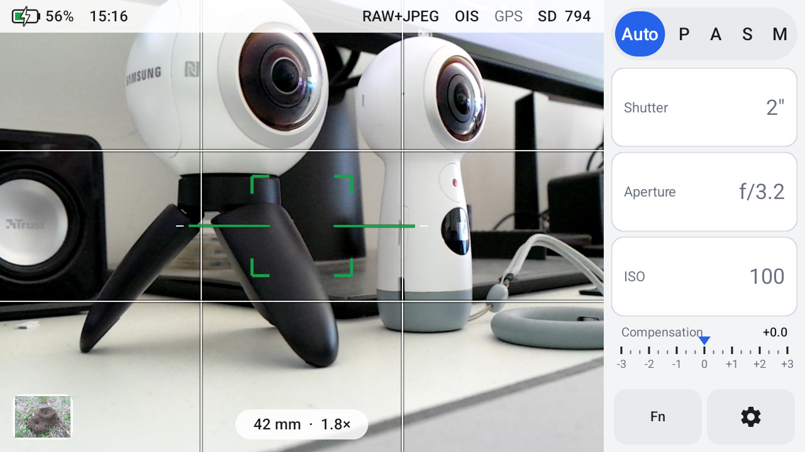
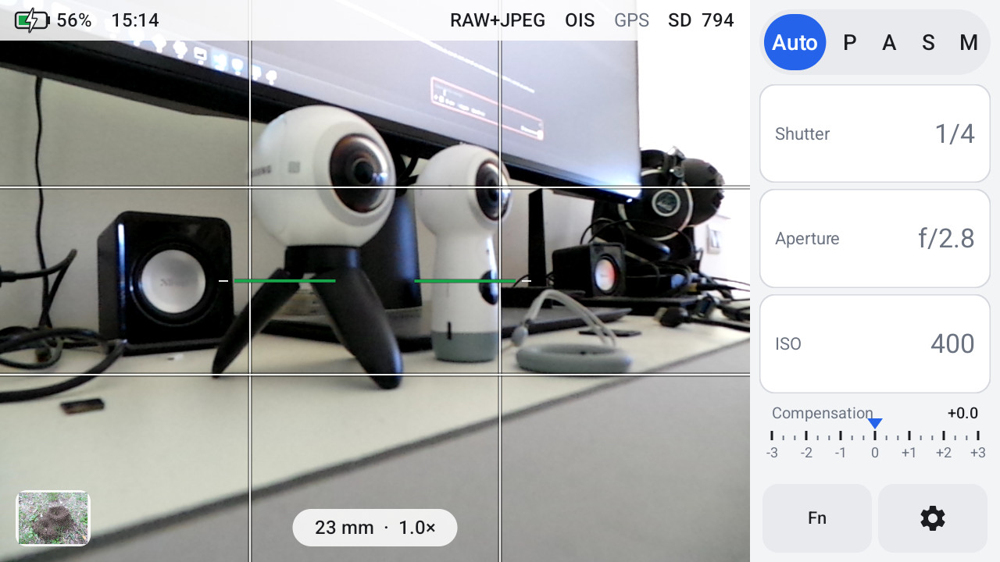
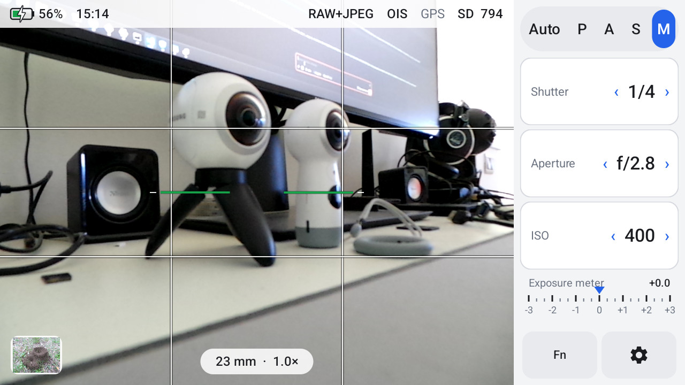
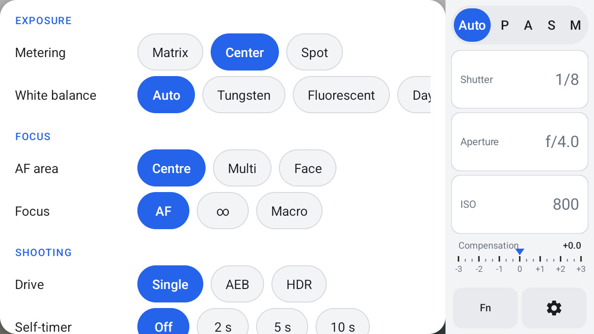
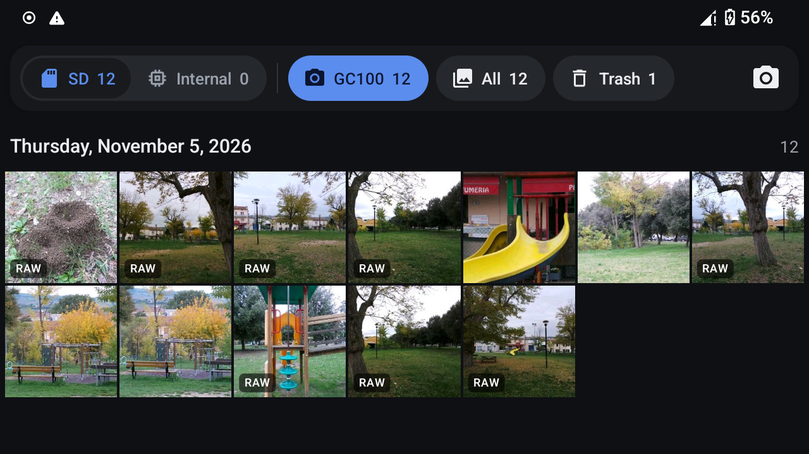

Android 14 per la Samsung Galaxy Camera
Una LineageOS 21 leggera per la Galaxy Camera e la Galaxy Camera 2 che tiene quello che le rende fotocamere: la levetta dello zoom, il pulsante di scatto, l'esposizione manuale, lo stabilizzatore ottico e il flash a scomparsa. E aggiunge le foto RAW.

Fatta per fotografare
La levetta zooma
Velocità lenta e veloce sullo zoom ottico 21x, come con il firmware originale.
Un vero pulsante di scatto
Mezza pressione per mettere a fuoco, pressione piena per scattare. Tocca lo schermo per scegliere il punto di fuoco.
P, A, S e M
Diaframma, tempo e ISO a mano, con l'esposimetro in M.
RAW (DNG)
I dati del sensore accanto a ogni JPEG, per Lightroom, Camera Raw e RawTherapee. Profilo dell'obiettivo incluso.
Stabilizzatore e flash
Stabilizzazione ottica attiva o no. Alza il flash per usarlo, chiudilo per spegnerlo.
Prima di tutto una fotocamera
Niente servizi Google e niente app da telefono: solo quello che serve a una fotocamera, con le sue app per scattare e rivedere le foto.
GC Camera e GC Gallery




Cosa funziona
| Fotocamera, zoom, autofocus, P/A/S/M, stabilizzatore, flash, RAW | Funziona |
| Wi-Fi, Bluetooth, GPS, audio, sensori, microSD | Funziona (Wi-Fi a 2,4 GHz) |
| Dati mobili 3G e SMS | Funziona sulla GC100 |
| Registrazione video, micro-HDMI, NFC | Non supportati |
| Aggiornamenti | Riflashando una release più recente; i dati restano |
L'elenco completo è nel README (in inglese).
Download
Ogni file inizia con il nome del modello. Scarica solo i file del tuo modello (Impostazioni → Info sul dispositivo → Numero modello) e non flashare mai i file di un modello sull'altro.
Galaxy Camera EK-GC100
EK-GC100-minirecovery.tar.md5EK-GC100-system-<data>.tar.md5
Firmware Samsung da conservare: GC100XXBMC4
Galaxy Camera 2 EK-GC200
EK-GC200-minirecovery.tar.md5EK-GC200-system-<data>.tar.md5
Firmware Samsung da conservare: GC200XXUCNK4
Per entrambi: il profilo dell'obiettivo Samsung-Galaxy-Camera-lens.lcp e SHA256SUMS.
Installazione
- Scarica il firmware ufficiale Samsung per la tua camera e conservalo: è la tua strada per tornare indietro.
- Flasha con Odin la mini recovery del tuo modello e fai il backup delle partizioni della camera.
- Flasha con Odin il sistema del tuo modello, poi fai il reset di fabbrica dalla mini recovery.
- Il primo avvio richiede qualche minuto. Inserisci una microSD e inizia a scattare.
Domande
Quali modelli sono supportati?
La Galaxy Camera EK-GC100 e la Galaxy Camera 2 EK-GC200. Ognuna ha i suoi file: non flashare mai i file di un modello sull'altro. GC110 e GC120 non sono supportate.
Posso tornare al firmware Samsung?
Sì, con Odin, in qualsiasi momento. La guida spiega come.
C'è Google Play?
No. Non ci sono servizi Google né store; le altre app si installano da file APK.
Come si aggiorna?
Si flasha con Odin il nuovo pacchetto di sistema del proprio modello. Foto, app e impostazioni restano.
Dove segnalo un problema?
Apri una issue su GitHub, indicando il modello e i passi che portano al problema.